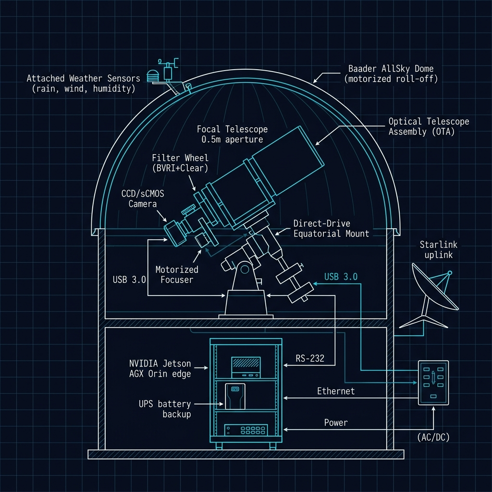

🛡️ Site Arrival Protocol
⚠ SAFETY FIRST: All sites are equipped with high-voltage equipment, automated moving parts (dome, mount), and sensitive optical/electronic systems. Do NOT approach the telescope mount or dome mechanism while the system is in autonomous mode. Always engage the MANUAL OVERRIDE switch on the control panel before servicing.
🔑 Access Procedure ROUTINE
- 1Badge into site perimeter gate using issued RFID credential
- 2Log arrival in the on-site tablet (mounted inside equipment shed)
- 3Verify dome status indicator: GREEN = safe to enter, RED = dome active — do NOT enter
- 4Engage MANUAL OVERRIDE switch (located on exterior control panel, south wall)
- 5Wait 10 seconds for servo brakes to engage — listen for confirmation click
- 6Enter dome enclosure
📋 Pre-Work Inspection SAFETY
- Dome shutter fully open or fully closed (no intermediate position)
- Mount parked at zenith or stow position
- UPS status LEDs all green (no amber/red)
- Weather station anemometer reading < 35 mph
- Humidity sensor reading < 85%
- No condensation on primary optics (visual check)
- Edge compute chassis fans spinning (audible check)
- GPS timing module lock confirmed (solid green LED)
🔭 Hardware Maintenance Procedures
🔬 Optics Cleaning ROUTINE
- 1Remove dust cap from primary mirror (0.5m f/4 Newtonian)
- 2Use compressed nitrogen (NOT air) to blow loose particulates — 10 PSI max
- 3Apply lens-grade cleaning solution to microfiber cloth (never directly to optics)
- 4Wipe in concentric circles from center outward — single direction only
- 5Inspect under collimation laser — verify Airy disk pattern at focus
- 6Log cleaning date and seeing conditions in maintenance tablet
Cleaning interval: Every 30 days at desert sites (CO1, TX, AZ, NM, CL), every 45 days at observatory-campus sites, every 14 days at tropical sites (PH, HI).
⚡ Edge Compute (Jetson AGX Orin) CRITICAL
- 1Check GPU temperature via LCD readout on chassis face — must be < 78°C
- 2Clear dust from intake vents using ESD-safe vacuum (quarterly)
- 3Verify thermal paste contact on GPU die — reapply Noctua NT-H2 if > 12 months
- 4Confirm all 4x NVMe status LEDs solid green (OS + data + swap + spare)
- 5Run
jetson_health --diagfrom SSH terminal — capture screenshot - 6Upload diagnostics to Beacon portal under Maintenance > Edge Health
🏔 Dome & Enclosure ROUTINE
- 1Grease dome shutter track rails (Baader-spec lithium grease, every 90 days)
- 2Test shutter open/close cycle — must complete in < 45 seconds
- 3Inspect weather seal gaskets — replace if cracked or > 18 months old
- 4Verify rain sensor trigger by spraying water on sensor head
- 5Test emergency close relay — shutter must close within 8 seconds
🔧 Mount & Drive System CRITICAL
- 1Inspect direct-drive motor cable connections (RA + Dec axes)
- 2Run pointing model calibration:
mount_cal --full-sky --stars=42 - 3Verify slew speed > 5°/sec on both axes
- 4Check encoder ring for debris (shine flashlight through gap)
- 5Confirm tracking residual < 0.5" RMS over 120-second integration
📐 Observatory Hardware Schematic

FIG 1 — SGSN STANDARD OBSERVATORY LAYOUT · Cross-section view
Dome → OTA (0.5m) → Direct-Drive Mount → sCMOS Camera → Filter Wheel → Focuser → Edge Compute → WAN Uplink
Dome → OTA (0.5m) → Direct-Drive Mount → sCMOS Camera → Filter Wheel → Focuser → Edge Compute → WAN Uplink
REFERENCE: All 20 Slingshot sites follow this standardized hardware layout. Component positions may vary slightly based on dome geometry (AllSky vs roll-off roof), but the signal path (Optics → Detector → Edge Compute → Network) is identical across the fleet.
🚨 Troubleshooting Quick Reference
| Dome won't open | Check wind speed (>35 mph = auto-lockout). Verify humidity < 85%. Reset dome controller by cycling breaker B3. If persists → escalate to Tier 2 |
| GPU thermal throttle | Clear intake vents. Check ambient temp (>40°C = expected at desert sites). Verify fan tach on chassis LCD. If fan failed → swap Noctua NF-A8 from spares kit |
| Seeing > 3.0" | Normal at low-altitude sites during daytime. If nighttime: check dome equilibration (open shutter 30 min before obs). Inspect for heat sources near aperture |
| GPS timing lost | Check antenna cable (roof-mounted). Verify u-blox ZED-F9T LED: solid green = lock, blinking = acquiring. Cold start takes 5-15 min. If > 30 min → replace antenna |
| Kafka queue backup (>20) | Check uplink bandwidth: speedtest --simple. Verify Starlink dish obstruction map. If bandwidth OK → restart kafka_transport.py service |
| sCMOS read noise elevated | Check detector temperature (must be at -20°C set point). Verify TEC power cable. If temp nominal → run dark frame calibration: cam_cal --darks --count=100 |
| Streak detect false positives | Update star catalog: cat_update --tycho2. Check hot pixel map freshness (< 7 days). If persists → re-run flat field calibration |
| Power failure recovery | UPS provides 8-24h backup. On AC restore: dome controller auto-reinit in 30s. Edge compute auto-boots in 90s. If stuck → manual power cycle in order: UPS → Orin → Mount → Dome |
🧰 Standard Spares Kit (Per Site)
| Noctua NF-A8 PWM (×2) | Edge compute chassis cooling fans |
| Noctua NT-H2 thermal paste | GPU die thermal interface material |
| Baader dome gasket set | Weather seal replacement kit |
| u-blox ANN-MB GPS antenna | Replacement roof-mount timing antenna |
| Cat6a shielded patch (×4) | Various lengths — edge compute to switch |
| Samsung 990 Pro 2TB NVMe | Data drive hot spare |
| Microfiber cloth set (×10) | Optics-grade, lint-free |
| N₂ gas canister (×2) | Compressed nitrogen for optics cleaning |
| Collimation laser | Primary mirror alignment verification |
| Davis Vantage Pro2 ISS | Spare weather station integrated sensor suite |
📞 Escalation & Emergency Contacts
| Tier 1 — Field Dispatch | NOC Duty Officer: +1 (720) 555-0180 (24/7) |
| Tier 2 — Engineering | Edge Compute Team: edge-eng@slingshot.space |
| Tier 3 — Critical Ops | VP Ground Segment: escalation@slingshot.space |
| Site-Specific Emergency | Local emergency number posted on site control panel |
⚠ ESCALATION RULE: If any site goes offline for > 4 hours with no remote recovery path, escalate directly to Tier 2. If > 12 hours → Tier 3 auto-triggers. All unscheduled outages must be logged in Beacon within 30 minutes.